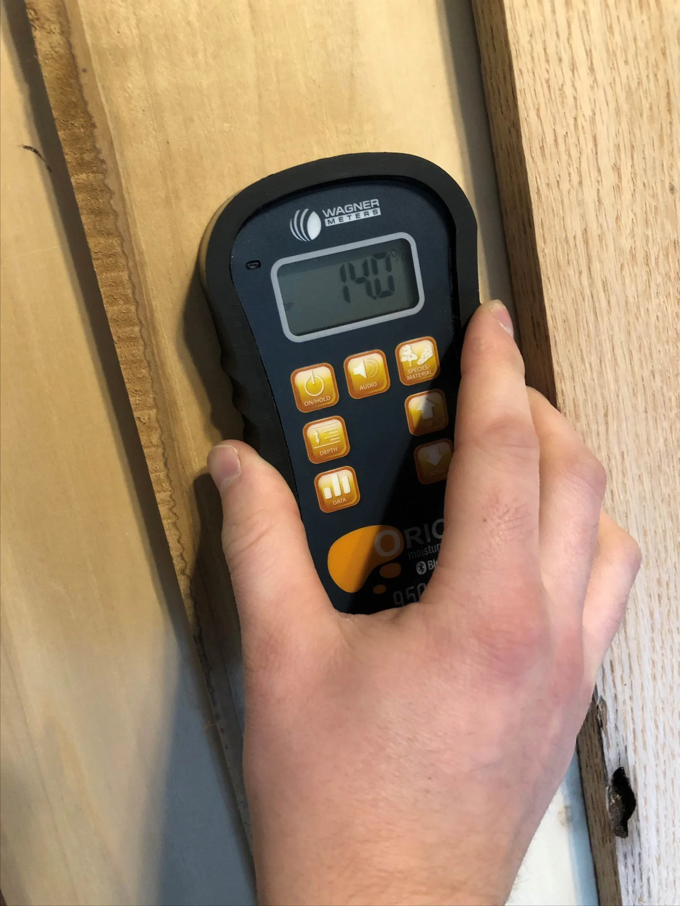
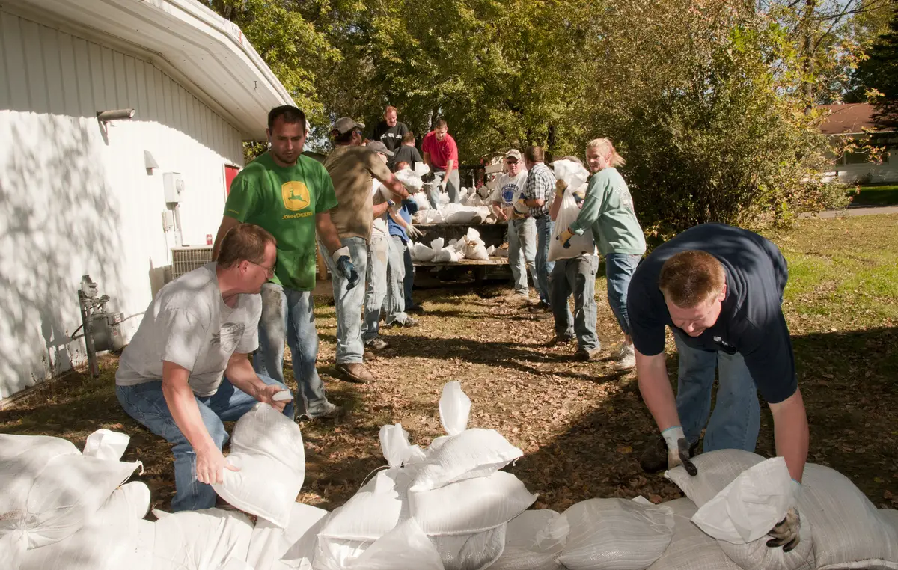

24/7 Emergency Response
Emergency Water Damage Restoration
Emergency Water Damage Restoration in Lancaster, CA
Burst line in the garage, a swamp cooler running into the ceiling, or water coming up through the slab? Call now and a local restoration crew is dispatched immediately to extract the water, find where it traveled, and dry your home under daily moisture readings.
- 24/7 emergency line, answered day and night
- Written scope before work begins
- Moisture readings logged every day
- Photo documentation ready for your insurer
Emergency response
Who do I call for water damage in Lancaster, CA?
Call High Desert Water Restoration at (661) 385-2497. A local crew is dispatched immediately, day or night, to stop the spread, remove standing water and start drying your home.
When you need water damage restoration Lancaster CA homeowners can count on, speed is only half of the job. The other half is drying the parts of the house you cannot see: the carpet pad, the bottom of the drywall, the insulation above a ceiling, and the concrete under your floor. That is where a water loss either ends cleanly or turns into mold and rebuild work weeks later.

Before the crew arrives
What to do in the next 10 minutes
Shut off the water at the fixture, or at the main shutoff near the street or in the garage.
Stay out of rooms where water has reached outlets, cords or the electrical panel. Turn off that breaker only if you can reach the panel standing on a dry floor.
Take photos and a short video of the water, the source and the damage before anything is moved.
Lift furniture legs onto foil or blocks and move rugs, electronics and paper off wet floors.
Keep the failed part, such as a split supply line or a cracked fitting, for your insurance claim.
Call (661) 385-2497. Don't use a household vacuum on standing water.
Full-service restoration
Water damage services in Lancaster
Every water loss starts somewhere different. As a full-service water damage company Lancaster homeowners and landlords can call for any source, we built each service below around a specific problem Lancaster homes run into.
Emergency water extraction in Lancaster
standing water pulled out of carpet, pad and hard floors, fast.
Burst and frozen pipe cleanup
split lines in garages, attics and exterior walls after a hard freeze.
Water heater leak cleanup
tank failures on the garage slab that run under the wall into living space.
Swamp cooler leak damage
rooftop evaporative cooler leaks soaking attic insulation and ceilings.
Flood damage cleanup
rainwater and street water that reaches the slab, garage or living areas.
Storm damage restoration
roof leaks and wind-driven rain around windows and doors.
Slab leak water damage
hidden leaks under the concrete that surface as wet floors and warm spots.
Ceiling water damage repair
stained, sagging or dripping ceilings from attic leaks.
Sewage cleanup
toilet overflows and sewer backups handled as contaminated water.
Mold remediation and mold inspection
growth found, contained, removed and the moisture source corrected.
Water mitigation and structural drying
air movers, dehumidifiers and daily readings until the structure is dry.
Appliance leak cleanup
washing machine hoses, dishwashers and refrigerator water lines.
Wet carpet and floor drying
carpet, pad, laminate and hardwood after a leak.
Commercial water damage restoration
offices, retail spaces and rental buildings.
Fire and smoke damage restoration
soot, odor and the water left behind by firefighting.
How lancaster homes leak
Why water damage spreads farther than it looks in Lancaster homes
Lancaster sits in the high desert of the Antelope Valley, and the way homes here are built changes how a leak behaves. Most damage we see in the city follows one of these patterns.
Slab floors push water sideways
Almost every house in Lancaster sits on a concrete slab with no basement or crawl space below. When a line fails, the water has nowhere to drain, so it spreads across the slab under carpet pad, laminate and tile, then wicks into the base of every wall it touches. A stain in the hallway often means wet drywall two rooms away.
Water heaters live on the garage floor
With no basement, the water heater usually stands in the attached garage. When a tank or its connections let go, water runs under the shared wall into the laundry room, hallway or bedroom next to it. Hard, mineral-heavy water can also wear tanks and fittings down faster.
Swamp coolers sit right above your ceiling
Evaporative coolers on the roof are common across Lancaster because summer air is so dry. A stuck float valve, a cracked pan or a split supply line sends water straight into attic insulation. Because the unit is out of sight, it can leak for days before a ceiling stain shows up.
Hard-freeze nights split exposed pipes
Winter nights on the valley floor regularly drop below freezing, and the cold settles in fast after sunset. Hose bibs, irrigation backflow devices and supply lines in unheated garages and attics are the first to split, and the leak often starts when the pipe thaws the next morning.
Short, heavy rain on flat ground
Lancaster averages only around seven inches of rain a year, but it tends to arrive in short, heavy bursts between November and March. The valley floor is flat, so water collects in streets and yards and can stand against the slab, the garage door and low entry points.
Dry air hides wet walls
Indoor humidity is low most of the year, so a room can look and smell dry while the wall cavity behind it is still soaked. That is why we confirm drying with moisture meters, not by touch.
Arrival to verified dry
How our water damage restoration process works
Dispatch and safety check.
A crew heads out as soon as you call. On arrival they confirm the source is stopped and the area is safe from electrical hazards.
Moisture mapping.
Moisture meters and thermal imaging trace where the water went, including under flooring and inside walls.
Water extraction.
Professional extraction units pull water out of carpet, pad and hard surfaces.
Controlled removal.
Only materials that cannot be dried safely, such as soaked pad, wet insulation or the bottom band of drywall, are removed.
Structural drying.
Air movers and dehumidifiers are placed for your floor plan, with readings logged every day until materials reach a normal dry level.
Documentation and repair plan.
You get photos, drying logs and a written scope for repairs that you can share with your insurance adjuster.
Standing water gets worse every hour. Call now and a local crew is dispatched immediately.
Call Now · (661) 385-2497Upfront, written pricing
How much does water damage restoration cost in Lancaster, CA?
Most residential water damage restoration Lancaster CA jobs land between about $1,200 and $6,000. Price depends on how far the water spread, how long it sat, and whether it was clean or contaminated.
| Type of job | Typical range |
|---|---|
| Small, contained leak caught within hours (one room) | $1,200 to $3,000 |
| Multi-room loss with carpet pad and drywall removal | $3,500 to $8,000 |
| Swamp cooler or attic leak with ceiling and insulation work | $2,000 to $7,500 |
| Sewage or contaminated water (Category 3) | $3,000 to $10,000+ |
The final number is set after an on-site inspection and moisture mapping, and you see a written scope before work begins. Many sudden water losses are covered by homeowners insurance, which can bring your out-of-pocket cost down to your deductible.
Insurance questions
Will insurance cover water damage in California?
It depends on the cause and on the type of policy you carry.
- Standard homeowners policy (HO-3): usually covers sudden and accidental water damage, such as a burst supply line or a failed water heater. Slow leaks that went on for months and outside flooding are usually treated differently.
- California FAIR Plan: the FAIR Plan does not cover water damage. If you have a FAIR Plan policy, check whether you also carry a Difference in Conditions (DIC) policy, because that is usually where water coverage sits.
- Renters: the landlord's policy usually covers the building; your renters policy covers your belongings.
Before you call your insurer, photograph everything, keep the failed part, and note when you found the water. Our crews document moisture readings and drying progress daily, which gives your adjuster a clear record of what happened.
Service area
Areas we serve in Lancaster, CA
We provide water damage restoration Lancaster CA wide, from The BLVD downtown to the larger lots of West Lancaster and the newer tracts of East Lancaster.
If you need help shutting off the water at the street, your water service in most of Lancaster comes from Los Angeles County Waterworks District No. 40, and parts of the west side are served by Quartz Hill Water District.
We also respond across the Antelope Valley, including Palmdale, Quartz Hill and Rosamond.
- ZIP codes: 93534, 93535, 93536, 93539 and 93584
- Neighborhoods: Downtown and The BLVD, West Lancaster around Avenue K and 30th Street West, East Lancaster, the Quartz Hill border, Del Sur and Antelope Acres
- Main corridors: Sierra Highway, the Antelope Valley Freeway (Highway 14), Avenue I through Avenue M

A local crew, day or night
Why Lancaster property owners call us
- Local crews. Your call connects you with a restoration crew that works the Antelope Valley every day.
- No waiting until morning. Water damage gets worse by the hour, so a crew is dispatched immediately, nights and weekends included.
- Dried by the numbers. Equipment stays until moisture readings match the dry baseline for your home, not until the floor feels dry.
- No surprises. You see a written scope before work starts.
- Built for insurance claims. Photos, readings and drying logs your adjuster can use.
- Homes and businesses. From a single bathroom leak to a flooded office suite.
From The BLVD to Antelope Acres, we handle the water damage Lancaster CA homeowners call about every day. If you're searching for water damage near me anywhere in the Antelope Valley, this is the line that answers.
Common questions
Water damage FAQs
How do I choose a water damage company Lancaster homes can trust?
Ask for a written scope before work starts, daily moisture readings, and photo documentation you can give your insurer. Confirm the contractor's California license and insurance before signing anything.
How fast can a crew get to my home in Lancaster?
Crews head out the moment you call (661) 385-2497. Most of Lancaster sits along the Highway 14 corridor, which lets crews reach most homes quickly, day or night.
Can I wait until morning to deal with a leak?
It is better not to. Water keeps moving under flooring and into walls for as long as it sits, and drywall, pad and wood start to swell within hours. Starting tonight usually means less material removed and a smaller bill.
How long does it take to dry a house after water damage?
Most homes dry in about three to five days. Hardwood, plaster and concrete can take longer. Drying ends when moisture readings say so, not on a fixed date.
Do I need to leave my house during drying?
Usually not. Most losses affect part of a home, and the equipment is safe to run with people inside. Sewage, electrical damage or large mold jobs can be exceptions.
Why is my floor wet when nothing is leaking?
That pattern often points to a supply line leaking under the slab. The water soaks the ground under the concrete and then surfaces through a crack or the edge of the slab. A warm spot on the floor usually means a hot water line. See slab leak water damage.
Does mold grow in a dry climate like Lancaster?
Yes. Outdoor air is dry, but a closed wall or ceiling cavity holds its moisture regardless. Mold can start growing within 24 to 48 hours on wet drywall and wood, which is why fast drying matters.
What is the difference between water damage repair and restoration?
Restoration covers the urgent part: removing water, drying the structure and preventing mold. Repair is the rebuild that follows, such as new drywall, paint, flooring and trim. Your written scope lists both so nothing gets missed.
Can I call for a small leak too?
Yes. No leak is too small to check. A small leak under a sink or behind a dishwasher can still soak the cabinet base and the drywall behind it.
Talk to a local crew
Get help now
When water damage Lancaster CA homes face hits at 2 a.m., you should not have to wait for business hours. Call (661) 385-2497 and a local crew is dispatched immediately to extract the water, dry your home and document everything for your insurer.
High Desert Water Restoration works with independent, licensed local restoration contractors who carry out the inspection, estimate and work in Lancaster and the Antelope Valley.